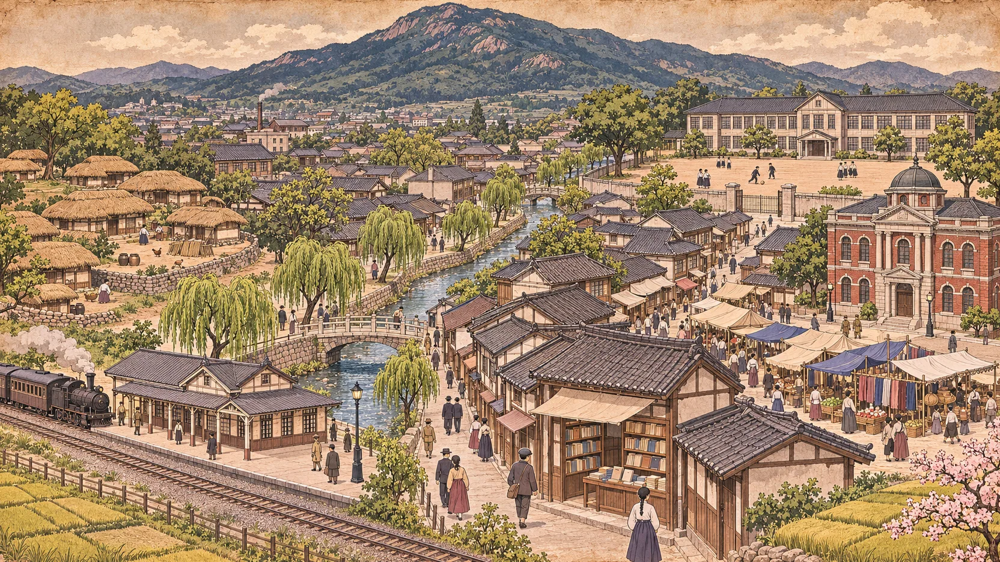
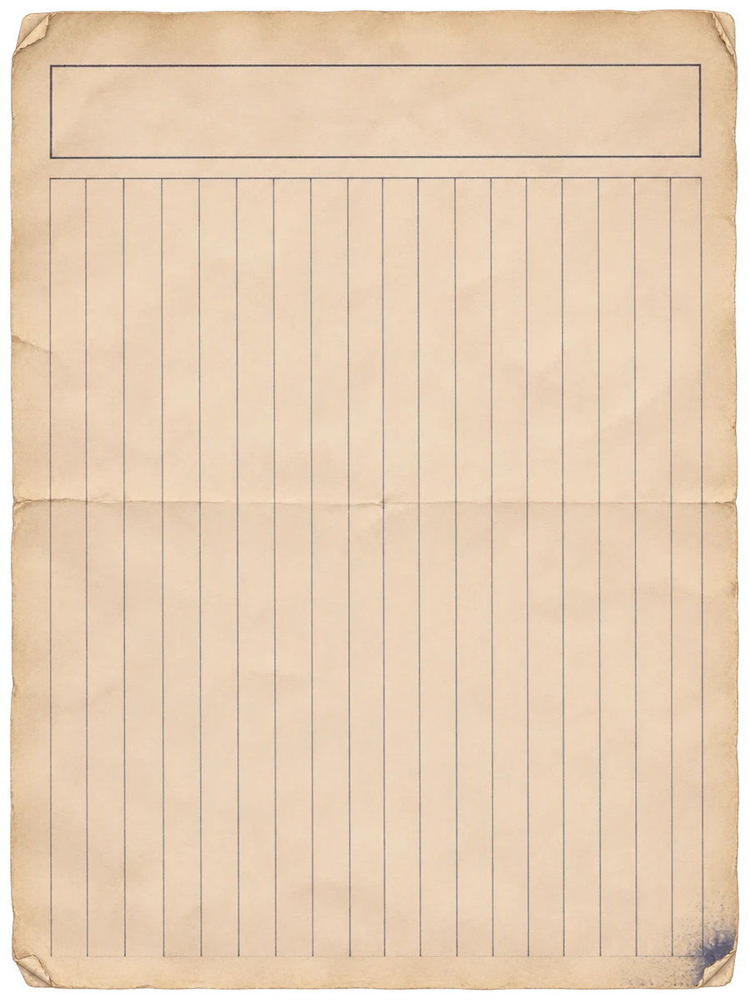
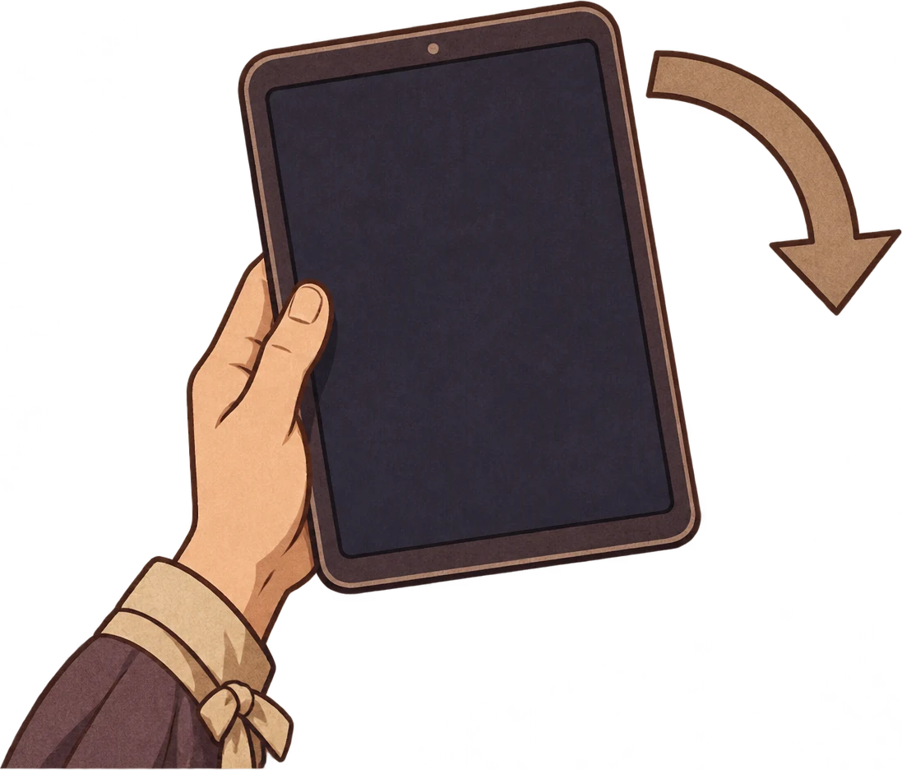

D-100
 0가마
0가마장학생
의심
목표

벼 베기
미니게임 · 벼 베기
아버지와 함께 벼를 베어라
- 아래 막대에서 낫 표시가 좌우로 움직인다
- 낫 표시가 노란 칸 안에 왔을 때 화면을 누르면 벤다. 가운데 진한 칸이면 두 단!
- 처음 한 번은 연습! 그다음 10번 베어서 볏단을 많이 모을수록 수확이 늘어난다. 체력이 높으면 노란 칸이 넓어진다

되질 감시
미니게임 · 되질 감시
속임수 되를 찾아라
동척 감독이 소작료로 쌀을 되로 퍼 간다. 그런데 되 하나가 몰래 더 크다.
- 되 세 개 중 조금 더 큰 되를 찾아 누른다
- 찾아내면 쌀 한 가마를 지킨다. 놓치면 한 가마를 더 빼앗긴다
- 모두 다섯 번. 눈치가 높으면 시간이 늘고, 큰 되가 살짝 빛난다

연설문 속 거짓 찾기
마쓰다 교관이 써 준 연설문
화면을 눌러 계속
윤재가 직접 겪은 일 · 증거
화면을 눌러 계속
미니게임 · 연설문 속 거짓 찾기
내가 겪은 일로 뒤집어라
마쓰다 교관이 써 준 연설문. 문장마다 윤재가 직접 겪은 일과 맞지 않는 곳이 있다.
- 가운데 연설문에서 노랗게 표시된 문장을 따진다. 문장과 카드 순서는 매번 섞인다
- 아래 기억 카드 중에서 그 문장을 뒤집을 증거를 고른다. 진짜 기억이지만 증거가 아닌 카드도 있다
- 카드가 두 장 필요한 문장도 있다. 한 번에 맞히면 ★, 두 번 틀리면 맞는 카드가 빛난다
구호
미니게임 · 리듬
- 오른쪽에서 낱말이 하나씩 날아온다
- 낱말이 왼쪽 동그라미에 겹칠 때 화면을 누른다 (PC는 스페이스바)
- 딱 맞으면 '좋아!', 조금 어긋나도 '괜찮아'. 놓쳐도 끝까지 이어진다

짐 나르기

가마니가 지게 위에 왔을 때 화면을 눌러 내려놓으세요
화면을 눌러 계속
알고 가기
화면을 눌러 계속

소지품 검사
미니게임 · 소지품 검사
형사가 오기 전에 숨겨라
- 빨간 위험 표시가 붙은 물건을 누른다
- 도시락통이나 서랍 밑 같은 숨길 곳을 누른다
- 시간이 끝나면 형사가 가방에 남은 물건을 뒤진다

심문

화면을 눌러 계속


1화 끝
공부만 잘하면 돼
생각해 볼 질문

1929, 광주의 열다섯
태어나 보니
식민지였다
D-100 · 장학생 수여식까지 100일
1화 ~ 6화
눌러서 닫기

화면을 가로로 돌려 주세요